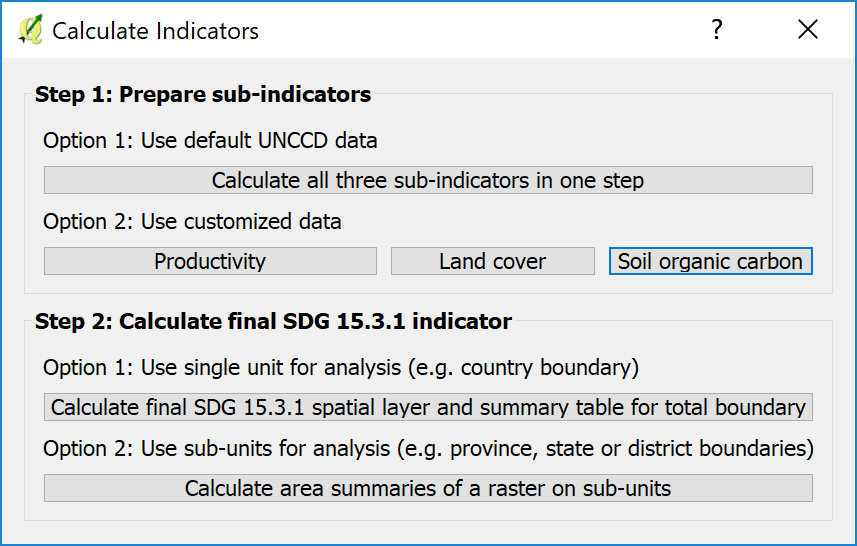

Calculate SDG 15.3.1#

Sustainable Development Goal 15.3 intends to combat desertification, restore degraded land and soil, including land affected by desertification, drought and floods, and strive to achieve a land degradation-neutral world by 2030. In order to assess the progress to this goal, the agreed-upon indicator for SDG 15.3 (proportion of land area degraded) is a combination of three sub-indicators: change in land productivity, change in land cover and change in soil organic carbon.
Contents
To select the methods and datasets to calculate these indicators, indicators click on the calculator icon highlighted above. This will open up the “Calculate Indicators” dialog box.

Select the Land degradation indicator (SDG indicator 15.3.1) to open the window for this analysis.

There are several options for calculating the SDG 15.3.1 Indicator. MISLAND supports calculating the indicator using the same process as was used by the UNCCD for the default data provided to countries for the 2018 reporting process. The tool also supports customizing this data, or even replacing individual datasets with national-level or other global datasets.
To calculate all three SDG 15.3.1 indicators in one step, using default settings for most of the indicators, click “Calculate all three indicators in one step”.
To calculate one of the three SDG 15.3.1 indicators, using customized settings, or national-level data, click “Productivity”, “Land cover”, or “Soil organic carbon”.
To calculate a summary table showing statistics on each of the three indicators, click “Calculate final SDG 15.3.1 indicator and summary table”. Note that you must first compute the indicators using one of the above options.
To calculate a summary table showing statistics on each of the three indicators for multiple sub-divisions, click “Calculate area summaries of a raster on sub-units”. Note that you must first compute the indicators using one of the above options.
There are three different indicators that are combined to create the SDG 15.3.1 indicator
Productivity: measures the trajectory, performance and state of primary productivity
Land cover: calculates land cover change relative to a baseline period, enter a transition matrix indicating which transitions indicate degradation, stability or improvement.
Soil carbon: compute changes in soil organic carbon as a consequence of changes in land cover.
There are two ways to calculate the indicators: 1) using a simplified tool that will calculate all three indicators at once, but with limited options for customization, or 2) using individual tools for each indicator that offer complete control over how they are calculated.
Calculate indicators with simplified tool#
This tool allows users to calculate all three sub-indicators in one step. Select the “Calculate all three sub-indicators in one step” button.
Select the parameters for Setup. The Period is the Initial and Final year for the analysis and select one of the two Land Productivity datasets. Select Next.

Select the Land Cover dataset. The first option is the default ESA dataset.
Select Edit definition to change the aggregation from the ESA Land Cover dataset into 7 classes.

The second option allows users to upload a custom land cover dataset. This requires two datasets to compare change over time. Select Next.

The user can now define the effects of land cover change and how it is classified as degrading or improving.

Select an area to run the analysis or upload a shapefile boundary
Note
The provided boundaries are from Natural Earth, and are in the public domain. The boundaries and names used, and the designations used, in MISLAND do not imply official endorsement or acceptance by Conservation International Foundation, or by its partner organizations and contributors.
If using MISLAND for official purposes, it is recommended that users choose an official boundary provided by the designated office of their country.

Name the task and make notes for future reference
Click on “Calculate” to submit your task to Google Earth Engine

Calculate productivity#
Productivity measures the trajectory, performance and state of primary productivity using either 8km AVHRR, 250m MODIS or 30m LANDSAT 7 (under development) datasets. The user can select one or multiple indicators to calculate, the NDVI dataset, name the tasks and enter in explanatory notes for their intended reporting area.
Productivity Trajectory#
Trajectory assesses the rate of change of productivity over time. To calculate trajectory:
Select an indicator to calculate
Select NDVI dataset to use and select Next
Note
The valid date range is set by the NDVI dataset selected within the first tab: AVHRR dates compare 1982-2015 and MODIS 2001-2016.
In the tab “Advanced”, select the method to be used to compute the productivity trajectory analysis. The options are:
NDVI trend: This dataset shows the trend in annually integrated NDVI time series (2001-2015) using MODIS (250m) dataset (MOD13Q1) or AVHRR (8km; GIMMS3g.v1). The normalized difference vegetation index (NDVI) is the ratio of the difference between near-infrared band (NIR) and the red band (RED) and the sum of these two bands (Rouse et al., 1974; Deering 1978) and reviewed in Tucker (1979).
RUE: is defined as the ratio between net primary production (NPP), in this case annual integrals of NDVI, and rainfall. It has been increasingly used to analyze the variability of vegetation production in arid and semi-arid biomes, where rainfall is a major limiting factor for plant growth
RESTREND: this method attempts to adjust the NDVI signals from the effect of particular climatic drivers, such as rainfall or soil moisture, using a pixel-by-pixel linear regression on the NDVI time series and the climate signal. The linear model and the climatic data is used then to predict NDVI, and to compute the residuals between the observed and climate-predicted NDVI annual integrals. The NDVI residual trend is finally plotted to spatially represent overall trends in primary productivity independent of climate.
WUE: is defined as the ratio between net primary production (NPP), in this case annual integrals of NDVI, and evapotranspiration.

Productivity Performance#
Performance is a comparison of how productivity in an area compares to productivity in similar areas at the same point in time. To calculate performance:
Select the start and end year of the period of analysis for comparison.
Productivity State#
State performs a comparison of how current productivity in an area compares to past productivity. To calculate state:
Define the baseline and comparison periods for the computation of the State sub-indicator.
The next step is to define the study area on which to perform the analysis. The tool allows selecting the area of interest in one of two ways:
Selects first (i.e. country) and/or second (i.e. province or state) administrative boundary from a drop-down menu.
The user can provide a shapefile, KML, or geojson defining an area of interest. Once this is done, Select Next.

The next step is to write a Task name and some notes to indicate which options were selected for the analysis.

When all the parameters have been defined, click “Calculate”, and the task will be submitted to Google Earth Engine for computing. When the task is completed (processing time will vary depending on server usage, but for most countries it takes only a few minutes most of the time), you’ll receive an email notifying the successful completion.
When the Google Earth Engine task has completed and you received the email, click “Refresh List” and the status will show FINISHED. Click on the task and select “Download results” at the bottom of the window. A pop up window will open for you to select where to save the layer and to assign it a name. Then click “Save”. The layer will be saved on your computer and automatically loaded into yoour current QGIS project.
Calculate land cover#
Changes in land cover is one of the indicators used to track potential land degradation which need to be reported to the UNCCD and to track progress towards SDG 15.3.1. While some land cover transitions indicate, in most cases, processes of land degradation, the interpretation of those transitions are for the most part context specific. For that reason, this indicator requires the input of the user to identify which changes in land cover will be considered as degradation, improvement or no change in terms of degradation. The toolbox allows users to calculate land cover change relative to a baseline period, enter a transition matrix indicating which transitions indicate degradation, stability or improvement.
To calculate the land cover change indicator:
Click on the Calculate Indicators button from the toolbox bar, then select Land cover.

Within the “Land Cover Setup tab” the user selects the baseline and target years
The land cover aggregation can be customized using the ‘Edit definition’ button. The user can define their own aggregation of land cover classes from the 37 ESA land cover classes to the 7 UNCCD categories.
Select the dial button for the “Custom” option and select “Create new definition”
Edit the aggregation suitable for the area of interest
Select “Save definition” and select Next

Within the “Define Degradation tab” user define the meaning of each land cover transition in terms of degradation. The options are: stable (0), degradation (-) or improvement (+). For example, the default for cropland to cropland is 0 because the land cover stays the same and is therefore stable. The default for forest to cropland is -1 because forest is likely cut to clear way for agriculture and would be considered deforestation. The user is encouraged to thoroughly evaluate the meaning of each transition based on their knowledge of the study area, since this matrix will have an important effect on the land degradation identified by this subindicator.
Users can keep the default values or create unique transition values of their own.

The next step is to define the study area on which to perform the analysis. The toolbox allows this task to be completed in one of two ways:
The user selects first (i.e. country) and second (i.e. province or state) administrative boundary from a drop-down menu.
The user can upload a shapefile with an area of interest.
The next step is to add the task name and relevant notes for the analysis.

When all the parameters have been defined, click “Calculate”, and the task will be submitted to Google Earth Engine for computing. When the task is completed (processing time will vary depending on server usage, but for most countries it takes only a few minutes most of the time), you’ll receive an email notifying the successful completion.
When the Google Earth Engine task has completed and you received the email, click “Refresh List” and the status will show FINISHED. Click on the task and select “Download results” at the bottom of the window. A pop up window will open for you to select where to save the layer and to assign it a name. Then click “Save”. The layer will be saved on your computer and automatically loaded into yoour current QGIS project.
Calculate soil carbon#
Soil Organic Carbon is calculated as a proxy for carbon stocks. It is measured using soil data and changes in land cover.
To calculate degradation in soil organic carbon:
Select Soil organic carbon button under Calculate Indicators

The Land Cover Setup tab allows the user to define the period for analysis with the baseline and target year. Users can select the Edit definition button to change the land cover aggregation method or upload a datasets.
The “Advanced” tab allows users to specify the Climate regime.

Users can select an area or upload a polygon shapefile for analysis

The next step is to add the task name and relevant notes for the analysis.
When all the parameters have been defined, click “Calculate”, and the task will be submitted to Google Earth Engine for computing. When the task is completed (processing time will vary depending on server usage, but for most countries it takes only a few minutes most of the time), you’ll receive an email notifying the successful completion.
When the Google Earth Engine task has completed and you received the email, click “Refresh List” and the status will show FINISHED. Click on the task and select “Download results” at the bottom of the window. A pop up window will open for you to select where to save the layer and to assign it a name. Then click “Save”. The layer will be saved on your computer and automatically loaded into your current QGIS project.
Compute SDG Indicator 15.3.1#
Once you have computed the three sub-indicators (productivity, land cover and soil organic carbon), and they are loaded into the QGIS project. Click on the Calculate icon. This will open up the “Calculate Indicator” dialog box. This time click on Step 2 “Calculate final SDG 15.3.1 indicator and summary table”.
The input window will open already populated with the correct sub-indicators (that if you have them loaded to the QGIS map)

Select the name and location where to save the output raster layer and the excel file with the areas computed.

Define the area of analysis. In this example, the country boundary.

Give a name to the task and click “Calculate”
This calculation is run on your computer, so depending on the size of the area and the computing power of your computer, it could take a few minutes. When completed, the final SDG indicator will be loaded into the QGIS map and the Excel file with the areas will be saved in the folder you selected. when done, a message will pop up.
Click OK and two layers will be loaded to your map: the 5 classes productivity and the SDG 15.3.1 indicators.
If you navigate to the folder you selected for storing the files, you can open the Excel files with the areas computed for each of the sub-indicators and the final SDG. NOTE: You may get an error message when opening the file, just click ok and the file will open regardless. We are working to fix this error.